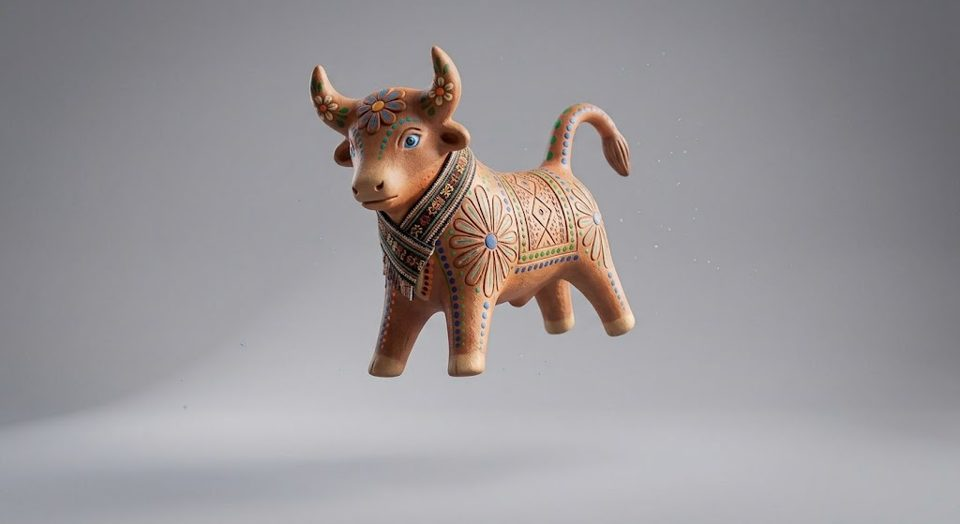
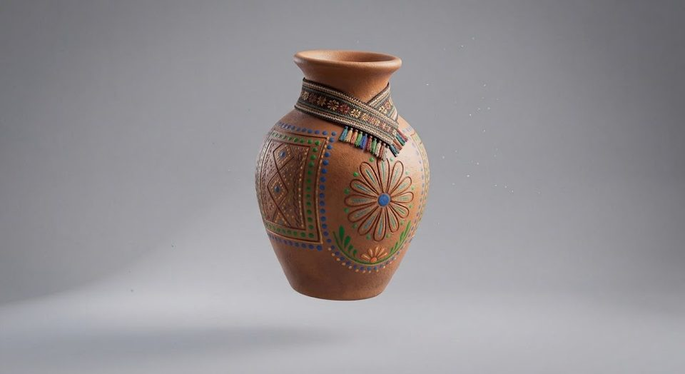
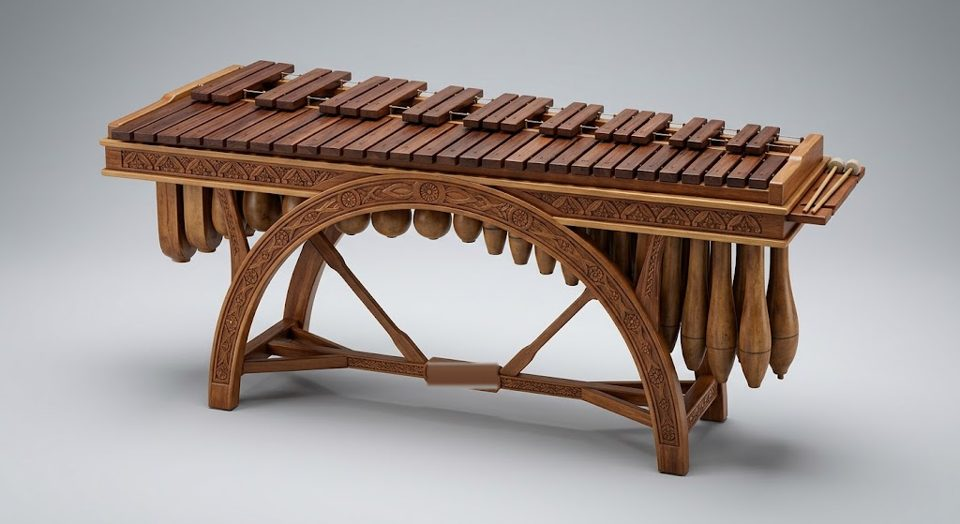
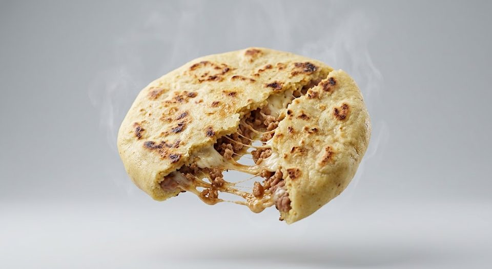
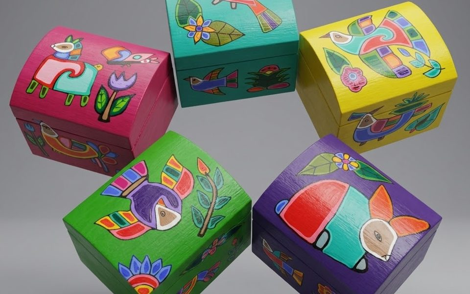

Tradición, arte y memoria
Máscaras que bailan, barro que guarda memoria, marimbas que llenan las plazas y sabores que reúnen a las familias. Recorre nuestro museo virtual y descubre, pieza por pieza, el alma de El Salvador.
Comenzar la exploración




Pieza destacada: Figura del Torito Pinto
Museo virtual
Cinco piezas que cuentan quiénes somos. Gira la sala, acércate a cada pieza y descubre su historia.
Arrastra para girar la sala y toca una pieza